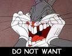
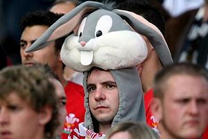

Looney Tunes
 De: La Frikipedia, la enciclopedia extremadamente seria.
De: La Frikipedia, la enciclopedia extremadamente seria.
De la serie Programas de TV:
[[Imagen:|200px|center]]
Asosiacion de Creaturas por la dominacion Mundial
| Idioma original:
|
Todos los possiblemente existentes
|
| Creador:
|
La Warner Bros. en tiempos de Crisis
|
| Duración:
|
Toda la Vida
|
| No. Episodios:
|
40 y contando
|
| No. Temporadas:
|
666 y en progreso
|
| ¿Aún se transmite?:
|
desde 1943
|
| Género:
|
Anime frustrado antes de los 50
|
| Nivel de frikismo:
|
Cuando produce
|
| Películas:
|
Demasiadas como para nombrarlas
|
Si los ves todos los dias empesaras a ser cosas en contra de tu coluntad.
Es una campaña de dibujos MALanimados, creado por la Warner Bros. (WB), antes de que Bugs se adueñaria de WB , se trataba de que Son una especie subdesarrollada de conejos mutantes y otras alimanias creadas nacidas en el 4069 a.C. , pero publicadas con actores de A verdad hasta en 1943 como respuesta del ratón asesino de walt Disnepedofilis, donde empeso una competencia por conquistar al mundo, lo cual influyo en los actores protagonistas que eran: El Pato lucas, Bugs Bunny, Pepe le pew, Silvestre y Piolin, Sam Bigotes, Elmer el Gruñón, y Porky.
La mayoría fundaron Asociaciones de dominaciones del mundo, como Bugs que se robo la presidencia de Warner Bros. en secreto, o el pato lucas que fue desterrado de los 666 continentes dentro de la galaxia, y confinado a una isla a lado de japon donde planea dominar el mundo.
Origen
La malvada Warner Bros., observo por años especímenes que tienen guardados en el área 51, después se cree que su padre (que es Chuck Norris(Dios)) ordeno a la WB que imitaran esas alimañas para que solo obedecieran sus órdenes para dominar el mundo, lo cual no funciono ya que el mundo ya es de Chuck Norris Y el proyecto fracaso, por lo que lo convirtieron en un programa para dominar el mundo a costillas de Chuck Norris. Su alto contenido de drogas en la sangre los hace prácticamente indestructibles, ya que esta les otorgan inmortalidad y buena salud (al contrario de lo que se cree).
 No te gustaría verme enfadado Varios actores fueron intervenidos quirúrgicamente para lograr sus planes, estos fueron: Todos, menos Bugs y el pato lucas, (años mas tarde lucas cambiaria de sexo).
 Típico fanatico de los lonay tunes
Características
Lo mas sorprendente es que son de verdad, y lo que mas miedo da esque si pueden hacer daño, tienen tonos de color chinga pupila, ojos grandes tipo anime, algunos usan guantes blancos, y suelen estar desnudos para incitar a tener sexo, y violar niños, dentro de lo que menos peor tienen es que adoran a Chuck Norris y a Geroge W. Bush (Sus lideres simbólicos)
El protagonista de la seria y símbolo de la empresa es un conejo, que ingiere zanahorias como si fuera drogara, llamado Bugs Bunny, un peligroso terrorista que ah intentado dominar al mundo por años.
Todos tienen ideas Socialistas comunistas, que fueron influidas por su (y Nuestro) dios Chuck, pero las ideas principales de dominación vienen de el enemigo del mundo, Geroge W. Bush la mayoría intenta dominar al mundo, son mas friki que tu o yo y todos nosotros juntos, la agrupacionde la serie duro poco, eran demasiados anarquistas en un grupo, lo que apreciamos en la TV fueron animaciones con montajes hechas por el nuevo líder de la WB, Bugs, pero esto es un secreto y no lo han podido comprobar ya que si lo hacen seria arrestado y fusilado con un borrador nivel 10..
Integrantes
- Bugs Bunny: Buscado en todo nuestro planeta, es el mas peligroso de todos, líder de club mata gracias, se considera que es el dueño secreto de WB, después de asesinar a todos los accionistas y tomar el mando, se cree que con eso financia sus planes de doinarnos. Tiende a vestirse de mujer y besar a los personajes de su mismo sexo por lo que se lo considera un gay y travesti.
- Pato Lucas: Acusado de terrorismo, intento de golpe de estado, actualmente es presidente soberano socialista de una isla perdida a lado de japon, tambien es accionista en yajhoo.
- Speedy González : Ratón hiperactivo al cual se le suministran drogas y estimulantes,fue detenido por control de plagas despues de una persecucion de 6 años fue atrapado en una parada sanitaria. Atualmente prepra una revolucion armada dentro de los laboratoos de ACME.
- El Gallo Claudio: Su sexo no está muy bien definido. Es un gallo con leve retraso mental, se lo conoce por hablar como un idiota y gemir.
- Pepe le pew.- Era un actor francés que fracaso en la TV nacional y emigro a los EUA, donde fue raptado por la WB donde experimentaron con el hasta que lograron hacer un zorrillo amoroso.
- Silvestre.- es un gato que no alimenta la satanica de su abuelita ya que considera que los pajaros dominaran el mundo, por lo que Silvestre intenta a toda costa comerse el pájaro satanico de la abuelita.
- Piolin.- Es el pájaro asatanico de la abuelita, juntos adoran a diablo, y piden el poder supremo de Chuck, lo cuan no obviamente no han logrado, mientras esperan ese dia, maltratan a un gato hambiriento avece con ayuda de un perro cholo melandro asesino teletubbie.
- Sam Bigotes.- Su única razón es mata a Bugs pero jamás lo logra por que es humillado antes de hacer algo, se cree un pistolero pero eso solo refleja su problema emocional de su estatura.
- Elmer el Gruñón.- Es el otro loco pelón, que quiere matar a Bugs y a lucas, pero nunca lo logra, al igual que sam es humillado, por su problema de calvicie.
- Porky.- Es un estúpido puerco resultado de miles de experimentos que nació con problemas de habla, fue la estrella de los looney tones una temporada mientras que bugs se oculaba de la policía por portación ilegal de Coca-Zanahoria, cuando volvió bugs agarro tics por el maltrato.
A QUE NO SABIAS QUE?
- Todos los looney Tones son Socialistas por nacimiento
- Los looney tones se abrevian LT
- No votaron por obama
- Por que las leyes no permiten que los animales transgenicos extraterrestres resultado de experimento de la UNSS Voten
- La seria original contaba con 666 actores
- La mayoria murieron misteriosamente
- El area 51 es el cuartel de los LT
- Existe el area 41 donde residen los actores retirados y pendionados de los LT
- Hay mas de 77 retirados residentes en el area 41 y 72 son gay y 5 son enfermeros
- El pato lucas y Bugs son los unicos que cnservan empleos socialistas
- Los demas son accionistas en empresas comunistas socialistas democratas y dirigen comunidad en pro del dominio mundial
- La WB hace animes malos y Montajes donde renuevan la serie de los Looney Tones
- Los actores retirados no pueden cobrar derechos de autor a WB por amenaza de muerte
- Porcky sigue siendo un idiota?
- Puse Luney Tones en ves de Luney tunes, para evaluar tus habilidades mentales
- Y reprobaste!
- Son ladrones precoces de porno?
Autor(es):
- Azulejos
- El Que Lo Sabe Todo
- Frikih
- Alex el Mono
- Cibercrank
- ArreKarallo
- Veni Vidi Vici
- E1324
- Kevrochi
- Liberman
Frikipedia 2005-2016, Licencia
GFDL 1.2 - Extraído por FrikiLeaks